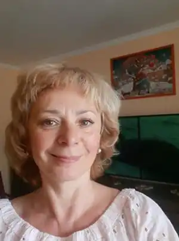

Я — киянка, в Києві народилась, живу і працюю. Освіту здобула теж у рідному місті, закінчила Київський Педагогічний Інститут та викладала англійську мову. З часом я змінила діяльність, працювала в туристичній галузі а потім працювала у виставковій сфері. Я люблю подорожувати світом і відвідала багато різних країн.
Поезія — це моє творче захоплення. Я пишу вірші українською, раніше й російською мовою, а нещодавно написала вірш англійською мовою. "Колискова пісня" на мої слова покладена на музику композитором Анатолієм Суським. Студійний запис у виконанні талановитої учениці музичної школи можна прослухати на youtube каналі. Пісню "Київ" на слова мого вірша "Зоряні війни" записав сучасний поп-гурт "Енджі Крейда". Мій вірш про війну "Бумеранг" був обраний для поетичного проекту Павла Шилька " Буремні вірші". Його озвучив диктор Денис Жупник і він прозвучав на радіо в День Радіо 2022 року.
У 2021 році я написала віршовану казку для дітей під назвою "Злата і фазан". На своїй сторінці у фейсбуці я озвучила один розділ з цієї казки. У листопаді 2023 році у Київському видавництві "Друкарський двір Олега Федорова" вийшов з друку пілотний наклад казкової поеми "Злата і фазан". Книгу можна придбати у видавця Олега Федорова. Вірші про війну написані під впливом пережитого. Весь цей час я залишалась в Києві, нікуди не виїжджала, і записувала поетичні рядки, які диктувало мені моє єство. Війна це не тільки смертельна руйнівна сила, а й потужна буремна сила, яка загострює всі почуття, збуджує всі життєві сили і пробуджує жагу до життя."